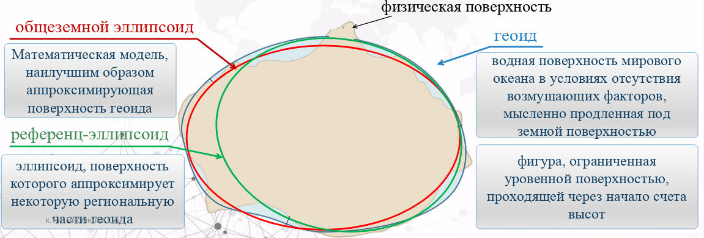

Земля в числах
Земля близка к шару, но слегка сплюснута у полюсов. Для общих оценок используют средний радиус 6 371 км. Разность экваториального и полярного радиусов составляет около 21,4 км — всего 0,34% радиуса, поэтому на небольшом рисунке сплюснутость почти незаметна.
средний радиус
Эверест — высшая точка суши над средним уровнем моря
побережье Мёртвого моря — самая низкая открытая точка суши
Бездна Челленджера — глубочайшая известная точка океана
Высоту Эвереста и глубину океана отсчитывают относительно уровенной поверхности, близкой к среднему уровню моря, а не от центра Земли.
Земной эллипсоид
Эллипсоид вращения получают вращением эллипса вокруг его малой оси. Это гладкая математическая поверхность, удобная для вычисления координат, расстояний и направлений.
Его задают большой полуосью a (экваториальный радиус) и малой полуосью b (полярный радиус). Полярное сжатие (сплюснутость Земли с полюсов):
Обычно в каталогах указывают a и обратную величину 1/α.
Математическая модель, наилучшим образом аппроксимирующая поверхность геоида в целом.
Его центр совмещают с центром масс Земли, а малую ось ориентируют вдоль оси вращения. Применяется в глобальных и спутниковых системах координат.
Эллипсоид, поверхность которого аппроксимирует некоторую региональную часть геоида.
Его положение и ориентацию закрепляют исходными геодезическими данными. Применяется в национальных сетях и картографии.
Три известных эллипсоида
| Эллипсоид | Большая полуось a | 1/α | Где применялся / применяется |
|---|---|---|---|
| Бесселя, 1841референц | 6 377 397,155 м | 299,1528 | Исторические сети и карты Центральной Европы, Индонезии и ряда других стран; основа старых региональных датумов. |
| Красовского, 1940референц | 6 378 245 м | 298,3 | СК-42, СК-63 и топографические карты СССР; встречается в архивных данных стран бывшего СССР. |
| ПЗ-90.11общеземной | 6 378 136 м | 298,25784 | Государственная геоцентрическая система России и координатная основа ГЛОНАСС. |
| WGS 84общеземной | 6 378 137 м | 298,257223563 | Глобальная система GPS, международная навигация, геоинформационные сервисы и веб-карты. |
Координаты без названия системы координат и датума неоднозначны. При переходе между системами меняется не только эллипсоид: необходимо учитывать положение начала, ориентацию осей, масштаб и эпоху.
Интересные факты
- Земля не «идеальная груша». Неровности геоида очень малы относительно её радиуса; в учебных визуализациях их сильно преувеличивают.
- Экваториальный диаметр больше полярного примерно на 42,8 км из-за вращения Земли.
- ПЗ-90 — не только эллипсоид. Это параметры Земли и геоцентрическая система координат; актуальная реализация — ПЗ-90.11.
- GPS и ГЛОНАСС используют разные реализации. GPS связан с WGS 84, ГЛОНАСС — с ПЗ-90.11; для точных работ выполняют преобразование координат.
Геоид и отсчёт высот

Соотношение физической поверхности Земли, геоида и аппроксимирующих эллипсоидов.
Водная поверхность Мирового океана в условиях отсутствия возмущающих факторов, мысленно продолженная под земной поверхностью.
Фигура, ограниченная уровенной поверхностью, проходящей через начало отсчёта высот.
В каждой точке геоида направление силы тяжести перпендикулярно его поверхности. Геоид имеет сложную форму и не задаётся простой формулой: его определяют по гравиметрическим, спутниковым и нивелирным данным.
Геодезическая высота
от эллипсоида до точки
Нормальная / ортометрическая высота
связана с уровенной поверхностью
Высота геоида / аномалия высоты
разность поверхностей
Геоид служит физической основой отсчёта нивелирных высот. В России в практической системе нормальных высот исходной поверхностью является квазигеоид, а начало Балтийской системы высот закреплено нулём Кронштадтского футштока. В упрощённом вводном изложении говорят, что высоты отсчитывают от геоида — поверхности среднего уровня моря.
Коротко о главном
- 01Для приближённых расчётов Землю принимают за шар радиусом 6 371 км.
- 02Эллипсоид — гладкая математическая модель для координат и вычислений.
- 03Общеземной эллипсоид описывает планету целиком, референц-эллипсоид подбирают для региона.
- 04Геоид — уровенная поверхность поля тяжести и физическая основа высот.
Проверьте себя
Почему в точной геодезии Землю нельзя считать шаром?
Полярный радиус меньше экваториального, а физическая поверхность и поле тяжести неоднородны. Шар удобен лишь для приближённых задач.
Чем геоид отличается от эллипсоида?
Геоид — физически обусловленная неровная уровенная поверхность поля тяжести. Эллипсоид — гладкая математическая модель, заданная параметрами.
Какой эллипсоид связан с ГЛОНАСС?
Эллипсоид системы ПЗ-90.11.
От какой поверхности ведут отсчёт нивелирных высот?
От уровенной поверхности, связанной со средним уровнем моря; строго для нормальных высот в России — от квазигеоида.